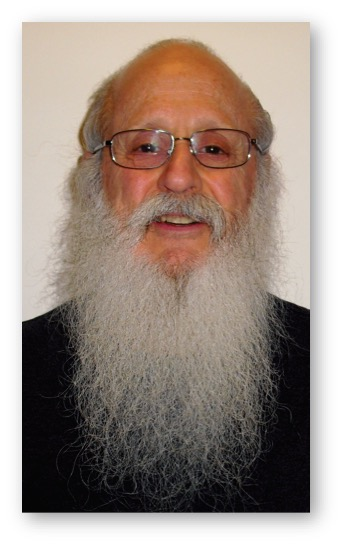
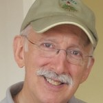
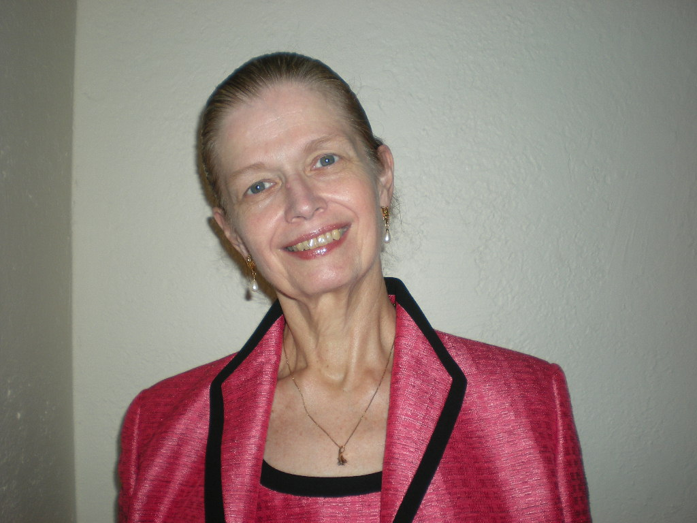
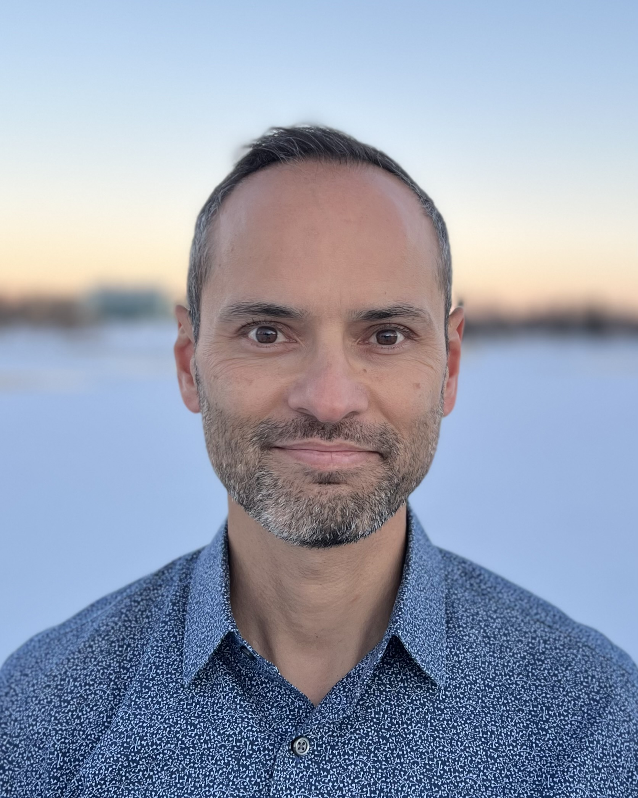
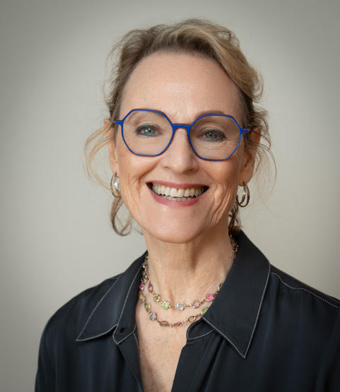
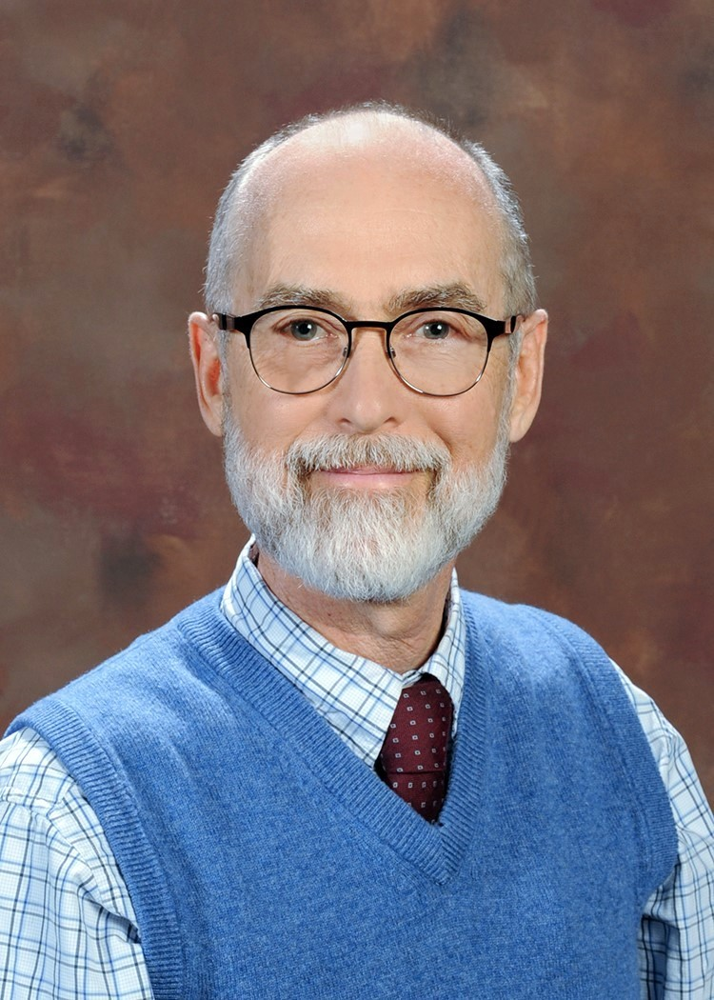
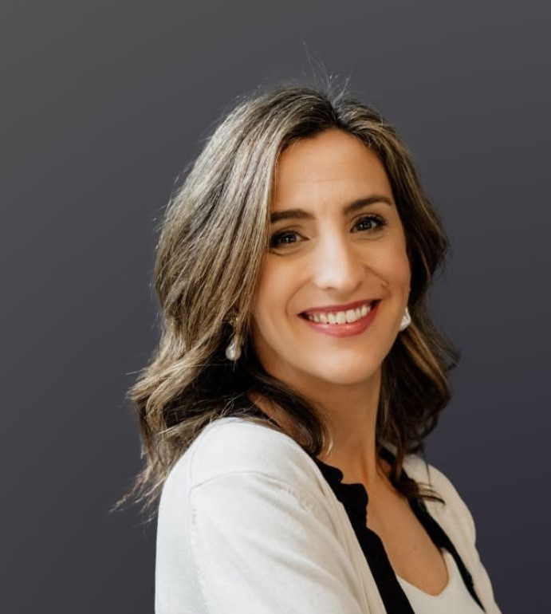
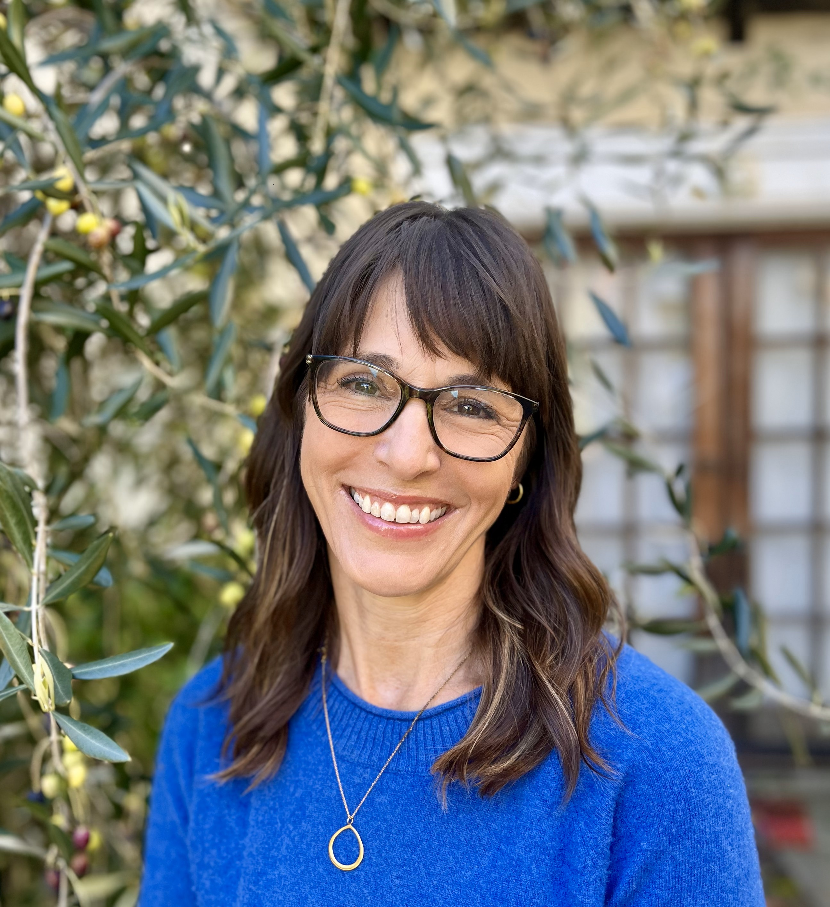

Licensed clinicians and educators bringing pediatric clinical hypnosis to health professionals across the country.
I.
Founding Faculty
The People Behind NPHTI
P
Pamela Kaiser
PhD, CPNP, CNS
Dr. Kaiser is a child/adolescent psychologist, pediatric nurse practitioner, pediatric clinical nurse specialist, and developmental specialist. She is Co-Founder of NPHTI, a founding member of NPHTI’s Board of Directors, and NPHTI Co-director of Education (2010–2021).

D
Daniel P. Kohen
MD, FAAP, ABMH
Dr. Kohen is NPHTI Co-Founder/Director of Education and is a Developmental-Behavioral Pediatrician now retired from clinical practice with Kohen Therapy Associates, Minnetonka, MN, and a retired Professor of Pediatrics and Family Medicine and Community Health in the Departments of Pediatrics and Family Medicine and Community Health, University of Minnesota. He is the Former Director, Fellowship Training in Developmental-Behavioral Pediatrics, Department of Pediatrics, University of Minnesota. Dr. Kohen is a Diplomate of the American Board of Pediatrics and the American Board of Medical Hypnosis and is a Fellow of the American Academy of Pediatrics, the American Society of Clinical Hypnosis, and the Society of Clinical and Experimental Hypnosis. He has been honored with multiple awards for scientific writing in clinical hypnosis and for clinical excellence and education in Pediatrics and Pediatric Clinical Hypnosis by local, national, and international hypnosis organizations. Dr. Kohen has published over 100 scientific publications including manuscripts in peer-reviewed publications, books, book chapters, and Abstracts. With Dr. Karen Olness he wrote the textbook, Hypnosis and Hypnotherapy with Children, now re-named Hypnosis with Children, in its fifth edition (2023). He has also created dozens of educational video recordings of clinical encounters illustrating and elucidating therapeutic encounters in pediatric clinical hypnosis. Dr. Kohen is past-President of and examiner for the American Board of Medical Hypnosis, past-President of the Minnesota Society of Clinical Hypnosis, and in 2016 completed 30 years as Director of Education and Training for the Minnesota Society of Clinical Hypnosis. He graduated from the Wayne State University School of Medicine and completed Pediatric Residency training at the Children’s Hospital of Michigan in Detroit and the Oklahoma Children’s Memorial Hospital in Oklahoma City. Dr. Kohen served as a Commissioned Officer in the Division of Indian Health of the U.S. Public Health Service (1971–1978).
K
Karen Olness
MD, FAAP, ABMH
Dr. Olness is board certified in Developmental and Behavioral Pediatrics and Professor Emerita of Pediatrics, Global Health and Diseases at Case Western Reserve University in Ohio; Inaugural President of the NPHTI Board of Directors (2016–2020), NPHTI Co-director of Education (2010–2021), and past president of the American Society of Clinical Hypnosis, the Society for Clinical and Experimental Hypnosis, the American Board of Hypnosis, the International Society of Hypnosis, and the Society for Developmental Behavioral Pediatrics.
D
David Wark
PhD
Dr. Wark is Emeritus Professor of Psychology, University of Minnesota, Minneapolis, MN; Past President, MSCH; Board Member, International Society of Hypnosis; Past President, Fellow, and Approved Consultant, ASCH; Fellow, SCEH.
II.
Teaching Faculty
2026 Workshop
AB
Andrew Barnes
MD, MPH, FAAP
Dr. Barnes is Associate Professor in Pediatrics and Adolescent Health, Developmental-Behavioral Pediatrics at the University of Minnesota, Minneapolis, MN. He currently serves as Co-Coordinator of NPHTI Workshops and has served as webmaster and listserv manager for NPHTI, and has held leadership roles in the Minnesota Society of Clinical Hypnosis. His clinical work with children and families focuses on helping children gain mastery of their own mind-body interactions — teaching biofeedback, mindfulness, and self-hypnosis to help them better regulate their thoughts, feelings, and actions. His research focuses on promoting resilience in children under stress and on the interplay between behavior and biology, with recent work on the well-being of children growing up in homeless families, published in journals including Pediatrics and The Journal of Pediatrics. He has been named a regional “top doctor” annually since 2015 by both Minnesota Monthly and Mpls-St. Paul magazines, and received the 2015 Daniel P. Kohen Outstanding Clinician Award and the 2017 Presidential Award for Service from MSCH.
DB
David K. Becker
MD, MPH, MA, LMFT
Dr. Becker is Clinical Professor at the UCSF Department of Pediatrics and the UCSF Osher Center for Integrative Medicine, and Co-Medical Director of the IP3 Pediatric Pain Management Clinic. He has extensive training and clinical experience with integrative medicine, mind-body strategies, chronic pain management, and clinical psychology, seeing children and young adults with a range of chronic and complex medical issues, with a focus on chronic pain. He also provides mental health counseling focusing on anxiety, depression, and behavior concerns, as well as family therapy. He received his medical degree, Master’s in Public Health, and pediatric residency training from the University of North Carolina, Chapel Hill, with additional training including the Fellowship in Integrative Medicine at the University of Arizona, a master’s in Clinical Psychology from the Wright Institute, and a three-year psychotherapy internship at the San Francisco Psychotherapy Research Group. Dr. Becker has a background in global humanitarian aid with several relief organizations, including Doctors Without Borders, and teaches and lectures nationally and internationally on integrative medicine, mental health, chronic pain management, and mind-body strategies.
CB
Cheryl S. Bemel
PhD, LP, NCSP, CTTS
Dr. Bemel is a Licensed Child/Adolescent Psychologist, Nationally Certified School Psychologist, and a member of the Minnesota Behavioral Health Medical Reserve Corps. She is President of the Minnesota Society of Clinical Hypnosis (MSCH) and an Approved Consultant with the American Society of Clinical Hypnosis. With special expertise in assisting those experiencing crisis, trauma, and other emergencies, she has provided Psychological First Aid at disaster sites following Hurricane Harvey, trauma services within the Minneapolis Police Department’s Child Development Policing Project, and interventions as a Crisis Psychologist in hospital emergency rooms. In her current private practice she sees children, teens, and adults targeting habit control, healthier relationships with food, trauma treatment, healing from chronic pain, and living well with chronic health conditions. With a National Certificate in Tobacco Treatment Practice, she also assists adolescents to become non-smokers.
FB
F. Ralph Berberich
MD, FAAP
Dr. Berberich attended Columbia University and the New York University School of Medicine. He trained in Pediatrics at the University of California, San Diego, and in Pediatric Hematology and Oncology at Children’s Orthopedic Hospital, Seattle, and at Stanford University. Prior to entering private practice, Dr. Berberich was on the clinical faculty at Stanford and attended as staff physician in Hematology-Oncology at the Children’s Hospital at Stanford. During 1989–1992 he served as Chief of Pediatrics at Alta Bates Medical Center.
RB
Rashmi Bhandari
PhD
Dr. Bhandari is Clinical Professor in the Department of Anesthesia at Stanford University Medical Center and works as a pediatric pain psychologist in an interdisciplinary clinic treating youth with chronic pain.

FB
Frederick Bogin
MD
Dr. Bogin is a retired Assistant Professor in Pediatrics, University of Connecticut School of Medicine, and maintains a part-time private practice at CLINIC Alternative Medicines in Northampton, MA. A graduate of Yale College and New York Medical College, he completed his pediatric residency at the University of Connecticut and a one-year mini-fellowship in Developmental-Behavioral Pediatrics, in which he is Board Certified. He spent the last 15 years of his career as Director of the Pediatric Primary Care Center at Saint Francis Hospital in Hartford, CT. Dr. Bogin attended his first pediatric hypnosis training in 1979 and has been involved in the education and clinical practice of pediatric hypnotherapy since. He is a member of ASCH.
TC
Torie Carlson
PhD
Dr. Carlson is a Registered Psychologist with expertise working with children and adults. He received his PhD in Counselling Psychology from Ball State University in 2002. Since 2008 he has worked at the Alberta Children’s Hospital on the Pediatric Complex Pain Team and Burn Team, helping kids and families with self-management approaches to pain, with a special interest in biofeedback and hypnosis.
CC
Camilla Gabriella Ceppi Cozzio
MD, FMH
Dr. Ceppi Cozzio maintains a private practice in Dübendorf, Switzerland. She is a member of the Swiss Society of Pediatrics, the Swiss Medical Society of Hypnosis (SMSH), and the Swiss Academy of Psychosomatic and Psychosocial Medicine, and an International Member of ASCH. Early in her career she worked in a Romanian orphanage and was a research assistant at the Department of Neurology, UCSF. She has used hypnosis as part of her general pediatric practice for over a decade, treating headaches, sleep disorders, nocturnal enuresis, functional abdominal pain, tics, and acute pain. As a teacher she is involved in advanced studies in child development and the education of medical students at the University of Zurich, and lectures locally and nationally on hypnosis. She is an SMSH Approved Consultant.

CE
Candace J. Erickson
MD, MPH, FAAP
Dr. Erickson is Associate Professor of Clinical Pediatrics at the Columbia University College of Physicians and Surgeons and Director of Developmental and Behavioral Pediatrics at The Brooklyn Hospital Center, New York. In 1987 she developed and implemented the first 3-day skill-building Clinical Hypnosis Workshop for pediatric health care professionals as a pre-meeting workshop of the Society for Developmental and Behavioral Pediatrics (SDBP). For 22 years she was Course Director of the SDBP Pediatric Clinical Hypnosis Workshops, bringing together a core teaching faculty that became NPHTI’s senior faculty, and has been senior faculty since NPHTI’s inception in 2010. For 39 years she has directed and taught skill-building pediatric hypnosis workshops at hospitals, mental health programs, hypnosis societies, and national conferences. Her research has examined the use of self-hypnosis by children with sickle cell anemia and perceptions of hypnosis and biofeedback among inner-city Hispanic children and families, and she received a NIMH Clinical Investigator Award for her study of coping with chronic illness in children. She directed Developmental and Behavioral Pediatrics at Columbia’s Children’s Hospital of New York Presbyterian for 20 years and helped formulate the curriculum requirements for the subspecialty of Developmental and Behavioral Pediatrics.
LG
Lynn Gershan
MD
Dr. Gershan is a graduate of McGill University School of Medicine and completed her pediatric residency at the University of Michigan and McGill, followed by a Neonatal-Perinatal fellowship at McGill and St. Louis Universities. Her career began at the Medical College of Wisconsin before she moved to private general pediatric practice and then trained in Integrative Health. She returned to academics in 2010 to start the Integrative Health program at the University of Utah–Primary Children’s Hospital and recently retired as founding Medical Director of Pediatric Integrative Health and Wellbeing at the University of Minnesota Masonic Children’s Hospital. Her published research and clinical interests include incorporating Traditional Chinese Medicine, self-hypnosis, and other integrative modalities into pediatric academic health centers. She is board certified in Medical Acupuncture and certified in clinical hypnosis, medical herbalism, pediatric massage therapy, and aromatherapy. As a member of the NPHTI Board, she looks forward to contributing to NPHTI’s mission and scope.
MG
Melanie A. Gold
DO, DABMA, DMQ, FAAP, FACOP
Dr. Gold is Professor of Adolescent Medicine at Columbia University Medical Center; Professor in the Department of Population & Family Health, Mailman School of Public Health; and Medical Director of School-Based Health Centers at New York-Presbyterian Hospital. She serves on the Executive Committee of the AAP Section on Integrative Medicine and is a Diplomate of the American Board of Medical Acupuncture, holding a Doctorate in Medical Qi Gong. A Motivational Interviewing Network Trainer since 2000, she has conducted numerous trainings on MI and behavior-change counseling for health care professionals. She began using hypnosis in 1993 and has taught pediatric clinical hypnosis since 1996. With NICHD funding she studied the effectiveness of MI for reducing sexual risk-taking, and she co-led a $3.6 million CDC and Office of Adolescent Health study testing a computer-assisted MI intervention. Dr. Gold is president and founder of Renaissance Research and Educational Consulting, Inc.
AG
Anya Griffin
PhD
Dr. Griffin is a Pediatric Psychologist working in chronic pain management, with a special focus on Complex Regional Pain Syndrome (CRPS) and acute and chronic pain management in Sickle Cell Disease.
LK
Lewis Kass
MD
Dr. Kass works in Pediatric Pulmonology and Sleep Medicine at The Center for Clinical Hypnosis in Mount Kisco, NY, and is Medical Director of the Pediatric Sleep Disorders Center at Norwalk Hospital in Norwalk, CT.
AK
Adam Keating
MD, FAAP
Dr. Keating is Section Head of Community Pediatrics at Cleveland Clinic Children’s in Wooster, Ohio, and Quality Improvement Officer at Cleveland Clinic Community Pediatrics. He is former Medical Director of the Longbrake Student Wellness Center at The College of Wooster; Clinical Assistant Professor of Pediatrics at the Cleveland Clinic Lerner College of Medicine; and Clinical Associate Professor of Pediatrics at the Ohio University Heritage College of Osteopathic Medicine. He has used hypnosis as part of his general pediatric practice for his entire career, since being introduced to it in his third year of medical school at the University of Rochester, and is an ASCH Approved Consultant and a member of the AAP Section for Complementary and Integrative Medicine. He regularly teaches medical students and works to integrate mental health and primary care for the Cleveland Clinic Children’s population.

BK
Bryan Kono
MD
Dr. Kono is an integrative pediatrician, founder of Highlands Integrative Pediatrics in Denver, and Clinical Instructor at the University of Colorado School of Medicine. He has used hypnosis and biofeedback in practice since 2009. During medical training he relied on journaling and the writing and reading of poetry to process profound patient experiences, and afterward authored the book A Rich Residence: The Poetic Education of a Pediatrician-In-Training. He is currently interested in reframing burnout in healthcare through a poetic lens and offers the workshop From Burnout to Burning Bright.

LK
Leora Kuttner
PhD
Dr. Kuttner is Clinical Professor of Pediatrics at the University of British Columbia and BC Children’s Hospital in Vancouver, Canada. Recipient of the American Pain Society’s Jeffrey Lawson Award for Advocacy in Children’s Pain Relief (2007), she is internationally recognized for her work in pain management, with over 45 journal articles and two books — the most recent, A Child in Pain: What Health Professionals Can Do to Help (2010), translated into Italian, French, and Mandarin. As a documentary filmmaker she co-produced and directed the award-winning films No Fears, No Tears (1985), No Fears, No Tears — 13 Years Later (1998), Making Every Moment Count (2003), and Dancing with Pain (2013). Trained in hypnosis in 1976, she has taught pain management and pediatric hypnosis since 1987 throughout Europe, the Middle East, Australia, New Zealand, and Asia, and has taught with NPHTI since its founding in 2010. She serves on the NPHTI Board of Directors and is NPHTI Director of Education (2024–present).
LL
Lisa Lombard
PhD
Dr. Lombard is a clinical psychologist in private practice in Chicago and co-founder of Comfort Kits for Children®, a 501(c)(3) nonprofit. A former Research Assistant Professor at Northwestern University Feinberg School of Medicine, she studied the psychosocial impacts of food allergies and integrated mindfulness and self-hypnosis into research on food allergies, asthma, and COVID-19, and was an Associate Professor at the Chicago School of Professional Psychology. Her clinical work spans inpatient and outpatient settings, academic testing, and community mental health, helping children, families, and adults cope with anxiety, stress-mediated health concerns, pain, and traumatic bereavement. In 2022 she co-founded the Comfort Kits for Children Initiative, which has delivered nearly 2,000 kits to children affected by conflict, disaster, and illness across Ukraine, Poland, Turkey, Israel, Chile, Maui, Chicago, and Minneapolis. She earned her BA and PhD from the University of Chicago, training with Erika Fromm, PhD, and currently serves as President of the NPHTI Board and President-Elect of APA Division 30.

RP
Robert A. Pendergrast, Jr.
MD, MPH, FAAP
Dr. Pendergrast is Professor of Pediatrics and Director of Adolescent Medicine at the Medical College of Georgia at Augusta University. He completed Pediatrics Residency and a Fellowship in Adolescent Medicine at the University of Mississippi Medical Center, and earned a graduate degree in Public Health at Johns Hopkins. Director of Adolescent Medicine at MCG since 1997, he began training in clinical hypnosis in 2002 and started the Pediatric Mind-Body Program at MCG in 2003, serving children and teens with chronic pain and other chronic conditions. He completed the Fellowship at the Arizona Center for Integrative Medicine in 2005 and is a founding member of the AAP Section on Integrative Medicine, and has been part of NPHTI’s Core Faculty since 2012. He has authored numerous research articles and book chapters; his book Breast Cancer: Reduce Your Risk with Foods You Love was a 2011 Indie Excellence National Book Awards finalist.
NS
Nadia Sarwar
MD
Dr. Sarwar is board certified in Pediatrics and Clinical Hypnosis. She works at Centerpoint Medicine in La Jolla, California.

AS
Alejandra Sención
MD
Dr. Sención is Co-Director of the Centro de Hipnosis Uruguay, Co-Founder of Método Abrigo, and Co-Founder of the Pain Committee at the Uruguayan Society of Pediatrics. She works in private practice with children, adolescents, and adults, with a special focus on anxiety and pain.

MS
Mindy Szelap
LCSW
Mindy Szelap is a therapist in private practice in Oakland, California, specializing in the treatment of anxiety, depression, chronic pain, and illness in children, adolescents, and their families. After earning her graduate degree at the University of California, Berkeley, she spent over twenty years working with children with chronic and life-threatening illness in Bay Area pediatric hospitals and clinics, where she learned the value of strengthening the family system to support children through crisis and healing. She developed an integrative program combining clinical hypnosis and CBT for pediatric functional GI conditions for Stanford Children’s Health. In her current practice she incorporates process-oriented hypnosis in every encounter, drawing on positive psychology, acceptance and commitment, and cognitive behavioral therapies, and finds hypnosis an invaluable tool for envisioning more connected families and communities.
JT
Jody Thomas
PhD
Dr. Thomas is a Licensed Clinical Psychologist in Denver, Colorado, and Adjunct Faculty in the Stanford Department of Psychiatry. A well-known expert in pediatric pain, she is a founder and the former Clinical Director of the Packard Pediatric Pain Rehabilitation Center at Stanford and a former Assistant Professor at the Stanford University School of Medicine, where she now provides supervision and teaching. As an active consultant for Lucile Packard Children’s Hospital she directs projects on the integration and innovation of pain management and hypnosis, including video-based interventions to empower children and families around pain management. With Dr. Leora Kuttner she founded and serves as Executive Director of the Meg Foundation, a non-profit dedicated to closing the gap between research and clinical practice in children’s pain prevention and management.